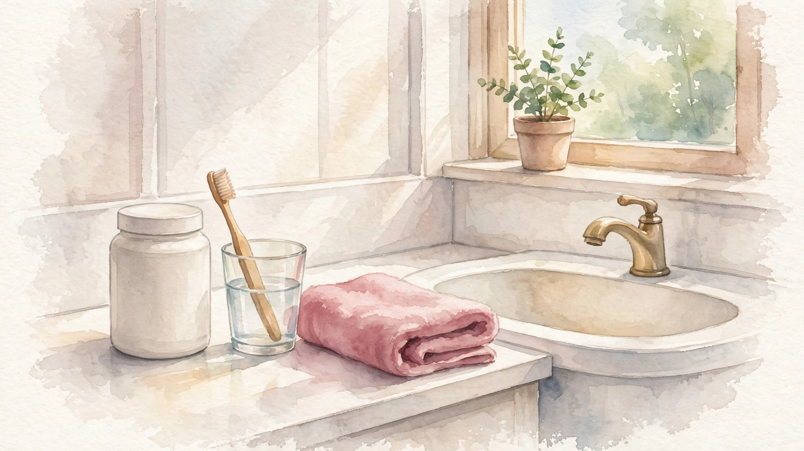
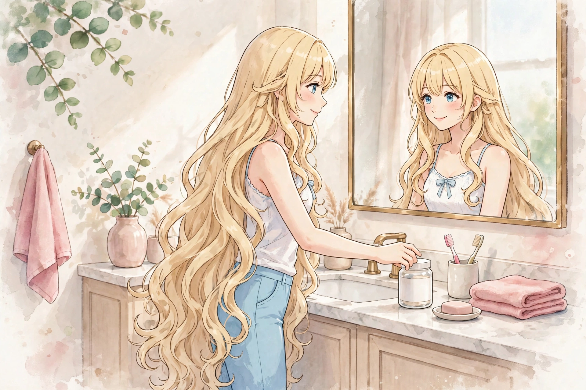

トップ ＞ インナーケア・サプリ ＞ サプリを続ける工夫：置き場所と習慣化
サプリを続ける工夫：置き場所と習慣化

サプリメントを買い続けているのに、飲み忘れで残ってしまう。施術のお客様からもよく聞く話です。続かない理由は、意志の弱さではなく、生活の流れの中に置き場所がないことがほとんどだと感じています。この記事では、習慣化の工夫を整理します。
置き場所は「目に入る場所」
習慣化の第一歩は、置き場所です。食卓の上、朝食の食器を置く棚のそば、歯磨きの道具の近くなど、毎日の行動の途中で自然に目に入る場所に置きます。引き出しの中にしまい込むと、存在自体を忘れてしまいます。ただし、直射日光や高温多湿の場所は避ける、という保管の基本との兼ね合いも必要です。キッチンでも、コンロから離れた棚が現実的な落としどころです。
小さなお子さんやペットがいるご家庭では、手の届かない場所であることも条件に加えてください。
既にある習慣に、ひも付ける
新しい習慣は、単独で作るより、既にある習慣にくっつけると定着しやすくなります。「朝食の後」「夕食の後」「寝る前の歯磨きの前」といった具合に、毎日必ず行う行動の直後に置くのです。飲むタイミングの考え方は、別記事「1日の目安量と飲むタイミングの考え方」でも整理しています。
カレンダーやスマートフォンのリマインダーを最初の2週間だけ使う方法もあります。習慣が流れに乗るまでの補助として使う分には、道具に頼ることも賢いやり方です。
残量が「見える」と、続けやすい
残りの粒数が目に見えると、飲んだ・飲んでいないの確認がしやすく、買い替えのタイミングも逃しません。1週間分を小さなケースに分けておく方法は、残量の見える化のひとつです。ケースが空に近づいたら補充する、というリズムができると、管理はぐっと楽になります。
続ける工夫は、気合いの問題ではなく仕組みの問題です。置き場所、ひも付ける習慣、残量の見える化。この3つを整えることが、無理なく続けるための土台になります。
家族と一緒に使う場合は、置き場所と管理の担当を決めておくと混乱が減ります。誰が残量を確認するのか、買い替えは誰がするのか。小さな取り決めですが、習慣を家庭全体で支える形になります。旅行のときは、必要な日数分だけを小分けにして持っていくのが基本です。その際も、元のパッケージの写真をスマートフォンに残しておくと、目安量や賞味期限を現地で確認できます。
習慣が安定してきたら、次は「やめる判断」も大切になります。生活が変わって不要になったものは、無理に続ける必要はありません。習慣は、足すことと見直すことの両方で成り立ちます。

セラフィナ「続けるコツは、気合いより仕組み。置き場所から工夫してみよう」